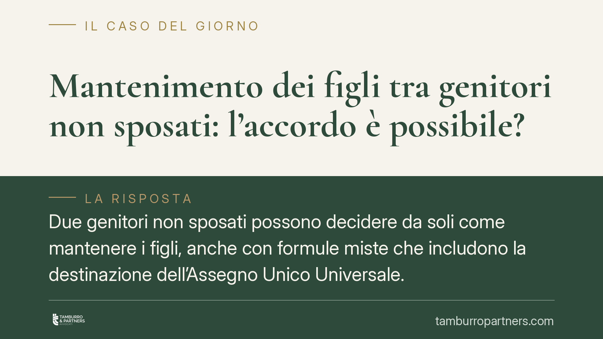

Mantenimento dei figli tra genitori non sposati: l'accordo è possibile?
Due genitori non sposati possono decidere da soli come mantenere i figli, anche con formule miste che includono la destinazione dell'Assegno Unico Universale. Il tribunale, però, non è un semplice notaio: prima di recepire l'accordo verifica che sia conforme all'interesse dei minori. Una recente pronuncia del Tribunale di Viterbo aiuta a chiarire confini e cautele.

Il caso
Due genitori non uniti in matrimonio hanno sottoposto al tribunale un accordo sul mantenimento dei figli minori con una struttura mista: una parte corrisposta con bonifico mensile dal genitore non collocatario, l'altra collegata alla destinazione economica della quota di Assegno Unico Universale (AUU) di sua spettanza.
Una recente pronuncia del Tribunale di Viterbo ha recepito l'intesa, ritenendola conforme all'interesse della prole. Il principio ribadito è semplice ma spesso frainteso: l'autonomia dei genitori è ampia, ma resta soggetta a un controllo di conformità.
Inquadramento normativo
Il dovere di mantenere, istruire ed educare i figli grava su entrambi i genitori a prescindere dal vincolo matrimoniale. Il fondamento è nell'art. 30 della Costituzione e nell'art. 315-bis del codice civile, che riconosce al figlio il diritto di essere mantenuto in relazione alle capacità dei genitori.
L'art. 315 c.c. sancisce inoltre la piena parità di stato tra tutti i figli: nati dentro o fuori dal matrimonio, i diritti sono identici. I criteri concreti di quantificazione, incluso il principio di proporzionalità rispetto alle risorse di ciascun genitore, si ricavano dall'art. 337-ter, comma 4, c.c., che indica tra i parametri le esigenze del figlio e il tenore di vita goduto durante la convivenza dei genitori.
Sul piano processuale, l'art. 473-bis.51 c.p.c. disciplina i procedimenti su domanda congiunta. Quando i genitori presentano un accordo, il tribunale ne verifica la rispondenza all'interesse dei minori: se il vaglio è positivo, prende atto delle intese, senza sostituire proprie valutazioni di merito a scelte già legittime.
Il ruolo del giudice: verifica, non riscrittura
È qui la distinzione decisiva. Il tribunale non gode di un potere di merito libero: non può modificare a piacere un accordo equilibrato solo perché ne concepirebbe uno diverso. Il suo è un controllo di conformità.
Due esiti sono possibili. Se l'accordo tutela adeguatamente i figli, il giudice lo recepisce. Se contiene clausole contrarie al loro interesse — ad esempio un contributo palesemente insufficiente — può indicare le modifiche necessarie e, in mancanza, rifiutare l'omologa. Il minore non è parte contrattuale: è titolare di un diritto indisponibile che i genitori non possono comprimere con un'intesa a lui sfavorevole.
L'Assegno Unico Universale nell'accordo
Punto delicato è la componente legata all'AUU. Occorre precisione. L'Assegno Unico è una prestazione erogata dall'INPS secondo regole proprie: in via ordinaria è ripartito al 50% tra i genitori, salvo diversa indicazione riconducibile all'affido o a un accordo comunicato all'ente.
L'AUU non è un credito privato liberamente 'cedibile' come una somma qualsiasi. I genitori possono concordare la destinazione economica delle rispettive quote nell'ambito del complessivo assetto del mantenimento, ma tale intesa deve conformarsi alle modalità di erogazione stabilite dall'INPS. In pratica: l'accordo può stabilire chi percepisce l'assegno e come esso concorre al mantenimento, ma non può derogare al funzionamento amministrativo della prestazione.
Implicazioni pratiche
Per i genitori non sposati questo significa disporre di uno strumento flessibile. È possibile costruire soluzioni su misura — importo, cadenza, ripartizione delle spese straordinarie, gestione dell'AUU — evitando un contenzioso e riducendo tempi e costi.
La flessibilità, tuttavia, non è illimitata. Un accordo generico, sbilanciato o che confonda il beneficio pubblico con l'obbligo privato rischia di non superare il vaglio del tribunale o di generare contestazioni successive, anche in sede di verifica con l'INPS.
Cosa fare in concreto
- Quantificate il contributo su base documentale: allegate redditi, spese ordinarie e straordinarie dei figli, così che la proporzionalità sia verificabile.
- Tenete distinta la componente AUU dall'obbligo di mantenimento: indicate chiaramente chi percepisce l'assegno e come concorre, senza presentarlo come somma 'ceduta'.
- Coordinatevi con l'INPS: verificate che la ripartizione concordata sia compatibile con le regole di erogazione e, ove necessario, comunicatela all'ente.
- Disciplinate le spese straordinarie: definite criteri di ripartizione e modalità di rimborso per prevenire future liti.
- Prevedete una clausola di revisione: è opportuno aggiornare l'accordo al mutare dei redditi o delle esigenze dei figli, per mantenerlo conforme al loro interesse.
Contributo informativo a cura di Tamburro & Partners Avvocati. Non costituisce parere legale.
Ogni famiglia ha il suo equilibrio.
Separazione, divorzio, affidamento, assegno: se vuoi un confronto riservato su una specifica situazione, scrivi allo studio. Ti rispondiamo entro un giorno lavorativo.